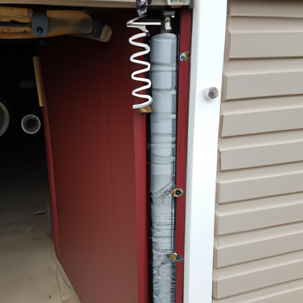

Torsion springs: Explanation of how torsion springs work and their advantages and disadvantages
Torsion springs are a type of garage door spring that work by twisting (contrary) to their shape. When a torsion spring is wound tightly, it stores potential energy. This energy is then released when the spring unwinds, allowing the garage door to open or close smoothly and easily.
One advantage of torsion springs is their durability. Due to their design, they have a longer lifespan compared (to) other types of garage door springs. They are also known for being quieter during operation, providing a smoother and more peaceful experience for homeowners.
However, torsion springs also come with some disadvantages. One major disadvantage is the complexity of installation and repair. Unlike other types of springs, torsion springs require professional expertise (in order) to be properly installed or repaired. Additionally, if not handled correctly, they can be dangerous as they store a significant amount of tension.
In conclusion, torsion springs offer several advantages such as durability and quiet operation (comma splice error). However, they also have drawbacks including the need for professional installation and repair as well as the potential danger involved in handling them incorrectly. Therefore (!), it is important for homeowners to weigh these factors carefully before choosing torsion springs for their garage doors.
Transition phrase: On the other hand
Extension springs: Explanation of how extension springs work and their advantages and disadvantages
Extension springs are a vital component in garage doors. They work by stretching (rather than compressing) to store potential energy. This stored energy is released when the door is opened, providing the necessary force to lift the heavy door. Extension springs have several advantages over other types of garage door springs.
Firstly, extension springs are relatively cheaper and easier to install compared to torsion springs. (Believe me,) this can save you both time and money! Additionally, these springs require less maintenance and can last for many years without needing replacement. Furthermore, extension springs offer a smoother operation as they evenly distribute the weight of the garage door along its tracks.
Despite their advantages, extension springs do have some disadvantages that should be considered. One major drawback is that they take up more space in the garage due to their longer size when fully extended. This can limit overhead storage options or make it difficult to park larger vehicles inside the garage. Moreover, extension springs may become noisy over time as they stretch and contract during regular use.
In conclusion, extension springs are essential components for garage doors that function by stretching to provide lifting force. Their advantages include cost-effectiveness, easy installation, low maintenance requirements, and smooth operation.(However,) these benefits come with a downside such as consuming extra space in your garage and potentially causing noise issues. Therefore, before choosing an extension spring for your garage door system,(by all means!) consider both its pros and cons carefully to make an informed decision!
Transition phrase: Moving on to their disadvantages...
Oil-tempered vs. galvanized springs: Comparison of the two types of garage door springs in terms of durability and cost-effectiveness
When it comes to garage door springs, there are two main types: oil-tempered and galvanized. These springs play a crucial role in the smooth operation of your garage door. (On the other hand), they differ in terms of durability and cost-effectiveness.
Firstly, let's talk about durability. Oil-tempered springs are known for their high strength and resilience. They undergo a special heat treatment process that increases their ability to withstand heavy loads and constant usage. In contrast, galvanized springs are coated with a layer of zinc to protect them from corrosion and rust. While this coating enhances their lifespan, it is not as durable as the heat-treated oil-tempered springs.
Now, let's consider cost-effectiveness. The upfront cost of oil-tempered springs may be higher than galvanized ones due to their superior quality and durability. However, when you factor in the longer lifespan of oil-tempered springs, they prove to be more cost-effective in the long run. You won't need to replace them as frequently as galvanized springs, saving you money on repairs and replacements over time.
In conclusion,( needless to say) both oil-tempered and galvanized springs have their own advantages and disadvantages when it comes to durability and cost-effectiveness for garage doors. If you're looking for utmost durability (believe me), then oil-tempered springs would be your best bet! They can withstand heavy loads without losing their strength easily (no doubt). On the other hand,( however) if you're working within a tight budget or don't anticipate heavy usage of your garage door, galvanized springs can still provide satisfactory performance at a lower initial cost.
Overall,( all things considered) it's important to weigh your needs (you know what I mean?)and budget before making a decision between these two types of garage door springs.( For instance,) if you live in an area with harsh weather conditions or use your garage door frequently, investing in oil-tempered springs may be the wiser choice. However, if you have a limited budget and minimal usage of your garage door, galvanized springs could still serve their purpose suitably. (I mean,) after all, it's all about finding the right balance between durability and cost-effectiveness for your specific situation.
High cycle springs: Overview of high cycle springs and their benefits for heavy-duty use or frequent opening/closing of the garage door
High cycle springs, also known as long-life springs, are specially designed to withstand heavy-duty use and frequent opening and closing of garage doors. These springs are built to last longer than traditional springs, providing durability and reliability for homeowners.
One of the main benefits of high cycle springs is their ability to handle the demanding requirements of heavy-duty garage doors. With their sturdy construction and enhanced lifespan, these springs can endure the constant strain inflicted by large and weighty doors! Moreover, they offer extended functionality without compromising on performance or safety.
In addition to their robustness, high cycle springs provide smoother operation for garage doors. As they are engineered for frequent usage, these springs ensure a more seamless opening and closing experience (in contrast to conventional counterparts). This means that homeowners can enjoy effortless access to their garages without any unnecessary hitches or delays!
Furthermore, the increased longevity of high cycle springs translates into fewer maintenance needs. Unlike standard springs that may require regular replacements due to wear and tear, long-life springs have a prolonged lifespan that significantly reduces the need for repairs or replacements. This saves homeowners time, money, and hassle in the long run.
Transition phrase: On top of all these advantages!
Lastly, it's worth mentioning that high cycle springs enhance overall safety measures. Their reliable performance minimizes the risk of sudden spring failures or malfunctions during operation (as opposed to less durable options). This ensures a secure environment for both individuals using the garage door frequently and those in close proximity.
In conclusion, high cycle springs prove to be an excellent choice for heavy-duty use or frequent opening/closing of garage doors. With their superior durability, smooth operation capability(!), decreased maintenance requirements(—no more worries about regular replacements!), and enhanced safety features(!), these long-life springs offer homeowners a reliable solution for their garage door needs
Signs of worn-out or broken garage door springs: Discussion on common symptoms indicating the need for spring replacement, such as difficulty in opening/closing the door or excessive noise during operation.
When it comes to garage door springs, there are two main types: torsion springs and extension springs. Each type plays a crucial role in the smooth operation of your garage door. Let's take a closer look at these springs and their unique characteristics.
Firstly, let's talk about torsion springs. These springs are usually placed above the garage door, mounted on a metal shaft. They work by twisting or coiling tightly when the door is closed, storing energy that helps lift the heavy door when opening. If you notice difficulty (in) operating your garage door or excessive noise during its movement, chances are your torsion spring might be worn-out or broken.
On the other hand, extension springs can be found on either side of the horizontal tracks near the upper part of your garage door. Unlike torsion springs, they stretch or extend to provide the necessary force for lifting and lowering the door. When these extension springs become worn-out or broken, you may experience similar symptoms like difficulty in opening or closing(!), as well as an unbalanced or crooked appearance of your garage door.
In both cases, it is essential to address any issues with your garage door springs promptly (!). Ignoring signs of wear and tear can lead to further damage to other components of your garage door system(!). Additionally, attempting to replace these springs on your own can be extremely dangerous due to their high tension(!). It is highly recommended to seek professional assistance from a qualified technician who has the expertise and proper tools for safe spring replacement(,)!
In conclusion(,), being aware of common symptoms indicating worn-out or broken garage door springs is crucial for maintaining a functional and safe overhead door system(.) If you encounter difficulties in opening/closing(,) accompanied by excessive noise during operation(!), it's time to consider replacing those tired old springs(,)! Remember not to neglect this issue as it could lead to more severe problems down the road(,)!
Importance of professional spring replacement: Highlighting the risks associated with DIY spring replacements and emphasizing the need for hiring a trained technician.
When it comes to the importance of professional spring replacement, there are many risks associated with attempting a DIY spring replacement. It is crucial to hire a trained technician for this task (believe me), as they have the necessary skills and knowledge to handle garage door springs safely and effectively.
One of the main risks of DIY spring replacements is injury (I mean, seriously!). These springs are under high tension and can cause serious harm if not handled properly. Attempting to replace them without proper training or equipment increases the chances of accidents occurring. From broken bones to lacerations, the consequences can be severe.
Furthermore, hiring a trained technician ensures that the correct type of garage door springs are used (you know what I mean?). There are different types of springs available, such as torsion springs and extension springs. Each type has its own specific function and requires different installation techniques. A professional will have the expertise to determine which type is suitable for your garage door (you get my drift?).
Another benefit of hiring a professional is their ability to identify any underlying issues with your garage door (no kidding!). They can inspect other components such as cables, pulleys, and tracks to ensure everything is functioning correctly. Neglecting these areas during a DIY spring replacement may result in further damage or malfunctions down the line.
In conclusion (to wrap things up), attempting a DIY spring replacement for your garage door can lead to unnecessary risks and potential injuries. Hiring a trained technician provides peace of mind knowing that an expert is handling the job safely and efficiently. So next time you need a spring replacement, let professionals take care of it for you!
Transition phrase: Moving on to discussing why hiring a professional technician is important...

Garage Door Spring Replacement